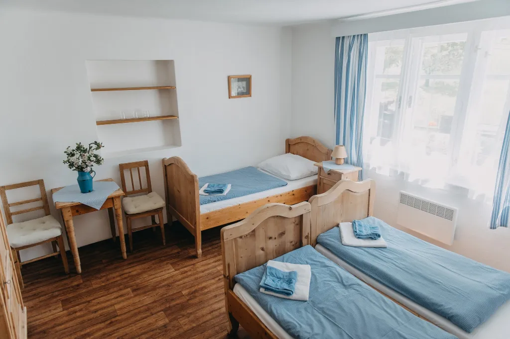
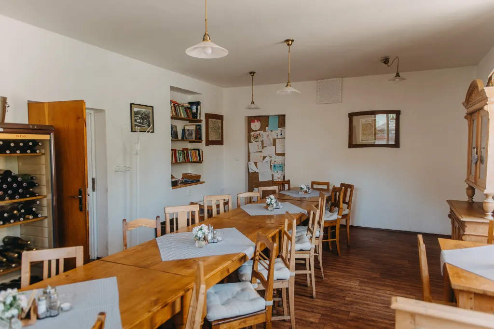

Otevírací doba pensionu: denně dle objednávek
Otevírací doba restaurace pro UBYTOVANÉ HOSTY:
Otevírací doba restaurace pro UBYTOVANÉ HOSTY:
Po - Čt 8:00-9:30 a 18:00-20:00
Pá 8:00-9:30 a 11:30 - 21:00
So 8:00-9:30 a 11:30 - 21:00
Ne 8:00-9:30 a 11:30 - 20:00
Pá 8:00-9:30 a 11:30 - 21:00
So 8:00-9:30 a 11:30 - 21:00
Ne 8:00-9:30 a 11:30 - 20:00
Mimo otevírací dobu mohou naši hosté od pondělí do čtvrtku využívat naši restauraci též jako SAMOOBSLUŽNÝ BAR - vše vysvětlíme a zaučíme na místě

V našem pensionu nabízíme ubytování v pěti pokojích s vlastním sociálním zařízením s
celkovou kapacitou 13 lůžek a 3 pevné přistýlky. Pokoje jsou vybaveny starožitným
selským nábytkem (postele jsou však upraveny tak, aby vyhovovaly současným požadavkům
na zdravý spánek), kvalitním povlečením, ručníky a bezplatným přístupem k bezdrátovému
internetu. Ve společných prostorách pensionu vám také poslouží lednice, mikrovlnná trouba a
rychlovarná konvice.

K odpočinku můžete využít společenskou místnost s televizí, stolními hrami, knihovnou a
dětským koutkem. Ve společenském sále si můžete zahrát stolní tenis. Letní večery si
můžete zpříjemnit posezením na naší restaurační zahrádce.

Další informace k pobytu
- Celý pension je nekuřácký.
- Parkování je bezplatné u pensionu.
- Na procházky krajinou si k nám můžete PO PŘEDCHOZÍ DOHODĚ přivézt i Vašeho psího mazlíčka.
- Vaše kola, lyže nebo kočárek Vám uschováme v prostorách pensionu.
- Pokoje v průběhu vašeho pobytu vám rádi uklidíme na vyžádání.